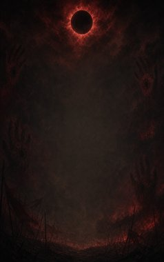
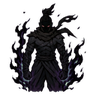
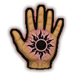

Technique trees › Skills and beast arts
Onimusha no Taiyoushin (Warriors of the Black Sun)
4 techniques in the Ninjutsu tab.
Learned from technique scrolls, mission rewards, written scrolls and scroll merchants; some NPC ninja know it. It counts toward the ninja build like other trees.
Eikoudan (Flare of the Black Sun) B
Chakra 35. B-rank. Seize one enemy with both hands and drain their chakra: their techniques are sealed for a while.
Eikoudan (Flare of the Black Sun) B
Chakra 35. B-rank. Seize one enemy with both hands and drain their chakra: their techniques are sealed for a while.
B-rank. Seize one enemy with both hands and drain their chakra: their techniques are sealed for a while.
| Rank | Chakra | Cooldown | Class level |
|---|---|---|---|
| B | 35 | 25 s | 9 |

Kokujitsu Kakusei (Black sun awakening) A
Chakra 55. A-rank. Let the black sun burn in you for a fight.
Kokujitsu Kakusei (Black sun awakening) A
Chakra 55. A-rank. Let the black sun burn in you for a fight.
A-rank. Let the black sun burn in you for a fight.
| Rank | Chakra | Cooldown | Class level |
|---|---|---|---|
| A | 55 | 1.2 hours | 13 |

Ishizuri (Imprint of the Black Sun) S
Passive. S-rank passive. The black sun seal: stronger blows and steadier nerves.
Ishizuri (Imprint of the Black Sun) S
Passive. S-rank passive. The black sun seal: stronger blows and steadier nerves.
S-rank passive. The black sun seal: stronger blows and steadier nerves.
Bakoushou (Bursting of the Black Sun) S
Chakra 90. S-rank. The seal bursts open: dark fire erupts around you and the black sun burns in your hands.
Bakoushou (Bursting of the Black Sun) S
Chakra 90. S-rank. The seal bursts open: dark fire erupts around you and the black sun burns in your hands.
S-rank. The seal bursts open: dark fire erupts around you and the black sun burns in your hands.
| Rank | Chakra | Cooldown | Class level |
|---|---|---|---|
| S | 90 | 4.8 hours | 18 |
Chakra is the technique's base cost, the number in its def. In play it is multiplied by the pawn's chakra energy usage multiplier, which traits (chakra artificer 90%, volatile conduit 110%), World of Naruto genes and jutsu enhancements change, so the technique window can show a slightly different number for each ninja. Cooldowns are in-game time, as the technique window shows them, and the pawn's cooldown stat shortens or lengthens them. World of Naruto gives every ninja a base of 100 maximum chakra; genes and traits change it.